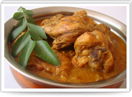
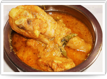
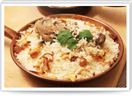
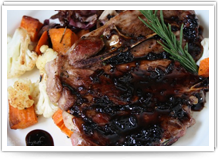
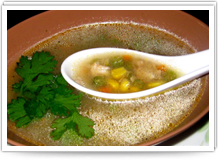
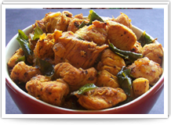

Kadaknath Nall - ennai Chicken
Kadaknath Chicken cooked in Nallennai is an authentic South Indian village dish. Nallennai (gingely oil) adds great flavor to the chicken. Kadaknath chicken would be the best choice for this dish.
Ingredients :
- Kadaknath chicken ( preferably with bones and skin) - 1 pound, cut into small cubes
- Onion - 1/2 (finely chopped)
- Tomato - 1/2 (mashed)
- Ginger-Garlic paste (Ingi poondu vizhudhu) - 2 teaspoons
- Gingelly Oil (nallennai, sesame oil) - 2 teaspoons
- Salt to taste
- Daily Samayal's special karimasala podi - 3 teaspoons
- Mustard (Kadugu) - half a teaspoon
- Fenugreek (Vendhayam) - 5-6 seeds
- Curry leaves (Kariveppilai) - 5-6 leaves
- Coconut (Thengai) - 4-5 (one inch piece each), ground into a fine paste. While grinding coconut, dry grind it first to avoid lumps.
- Turmeric powder- 1/2 teaspoon

Procedure :
- Add 2 teaspoons gingelly oil (can be substituted with peanut oil/ corn oil/ vegetable oil but gingelly oil gives the traditional village flavor) in a flat-bottomed vessel.
- Add mustard seeds, followed by fenugreek seeds.
- When mustard splutters, add curry leaves, chopped onions, salt, turmeric and fry for a few minutes.
- When onion turns slightly brown, add ginger-garlic paste and fry for a few seconds (until the raw smell is gone).
- Add kadaknath chicken and half a cup of water (adding too much water would spoil the taste, adding water until the chicken pieces are fully immersed would be the right amount). Cook the chicken until done, it would take about 12-15 minutes approximately. *Do not add tomatoes with chicken at this stage, it will make the chicken rubbery. Add tomatoes once the chicken is cooked *
- Add 3 teaspoons of Daily Samayal's special karimasala Podi (substitute it with 1 spoon chilli powder, 2 spoons coriander powder, half spoon garam masala powder), and mashed tomatoes. Cook for another 6-8 minutes.
- Add ground coconut paste to this mixture and allow it cook for another 5-8 minutes.
- Allow it to stand for a few minutes and then serve with hot rice or chapatis.
- Entire cooking is done on a medium heat.
- Spice level : Very spicy.

Kadaknath Chicken dum biryani
Recipe for preparing Kadaknath chicken dum biryani with detailed procedure for putting dum.
Ingredients :
- Rice – 1/2kg
- Kadaknath Chicken with bones – 1/2kg
- Coriander leaves – 1/2 bunch
- Mint leaves – 1bunch
- Green chilli – 4
- Big Onion – 250g
- Tomato – 250g
- Ginger garlic paste – 50g
- Curd – 1/2 cup
- Oil – 2tblspn
- Cardomon – 2
- Edible alga / algae(Kadal pasi ) – 1/2tspn
- Cinnamon, Cloves, Marathi Moggu, Star anise(Annasi poo) – Each 2
- Red Chilli Powder – 2tspn
- Turmeric Powder – 1/2 tspn
- Coriander Powder – 4tspn
- Salt – to taste

Recipe :
- Heat a thick bottom vessel or a cooker. Add 2tblspn oil and add all garam masala ingredient(cinnamon, cloves, marathi moggu, annasi poo, cardomon, star anise)s one by one. You can also powder these ingredients and use it.
- Add chopped onion and fry it till it turns into brown color. Now add ginger garlic paste and fry it till the raw smell goes off. Then add tomato, saute it well.
- Now add turmeric powder, chiili powder, coriander powder and little water, fry it till till the raw smell goes off.
Add coriander, mint leaves and saute it well. Now add cleaned Kadaknath chicken with little salt , fry it for 5 minutes.
Once its half done, then add slitted green chilli and mix it well.
- Finally add washed rice and mix well. For 1 cup rice add 1 1/2 cups of water. Close the lid and let it to cook.
Once the rice is 3/4th done add curd and mix well.You can dum cook the biryani by covering the vessel with wheat flour dough or with a thick kitchen towel. Or you can keep the vessel that containg water on top of the briyani vessel.
- Here I’ve used kitchen towel and put the tight lid on top of it.
- Now completely reduce the heat into medium flame and remove the biryani vessel.
- Now place a flat heavy bottomed non-stick pan with water on the stove and allow it to heat.
- After that on top of it place the biryani vessel and cook for 30 -35 minutes. (or you can cook the biryani in low heat for 40 minutes)
- You will smell a nice aroma after 30 -35 minutes so that way you will know the biryani is ready now.Now turn it off the heat and remove the vessel.
Notes :
You can make small slits on the Kadaknath chicken, this well help the masala to penetrate well into the chicken.
Make sure that the heavy bottomed pan( used for putting dum) has water through out the dum period to avoid briyani’s lower layer getting burnt.
Kadaknath Chicken Chops
Ingredients
- Kadaknath chicken - ½ kg
- Oil - 5 tbsp
- Red chilly pwd - 1 tbsp
- Fennel pwd - ¼ tbsp
- Cumin pwd - ½ tbsp
- Pepper pwd - 2 tbsp
- Turmeric pwd - ¼ tbsp
- Onion - 2
- Tomato - 1
- Green chilly - 2
- Yoghurd - 2 tbsp
- Ginger garlic paste - 1 tbsp
- Fresh lemon juice - 1 tbsp
- Salt to taste
- Chopped coriander leaves
To prepare garam masala :
- Cinnamon – 2, clove – 1, cardamom – 1, bay leaf – 1
- Roast them dry and grind it to fine pwd.

Method :
- Heat oil in a pan, add red chilly pwd, fennel pwd, cumin pwd and salt to it.
- Mix them and add chicken pieces, toss it well, in simmer for about 5 mins.
- Chicken shrinks and absorbs all the spices to it.
- Add 1 tb water to it and cook it covered for another 5 mins.
- llow the chicken to get half cooked.
- Heat oil in a fry pan, temper with garam masala pwd, fry onion till it is browned.
- Add green chillies, ginger garlic paste followed by mashed tomato puree.
- Toss it and allow to boil by adding turmeric pwd, pepper pwd.
- Now add the chicken with masala, mix well and cook it covered by tossing once in a while.
- Once the required consistency acquired, remove from flame, add 1 tbsp fresh lemon juice and mix gently.
- Garnish with fried onion, lemon wedges and sliced tomatoes.
- Serve hot with chopped coriander sprinklings.
- Mouth watery Naattu Kozhi Chops ready.
Kadaknath Kozhi Rasam - Chettinad Style
Ingredients
- Kadaknath chicken (bony pieces)-250 gms.
- Chopped pearl onion-15.
- Tomato-1.
- Chilli powder-1/2 teaspoon
- Turmeric powder-1 teaspoon
Ingredients (to grind) (Rasam powder)
- Pepper corns-1 teaspoon.
- Small jeera -1 teaspoon.
- Fennel seeds-1/2 teaspoon.
- Corriander powder-1 teaspoon
- Red chillies-2
- Small onion-4
- Garlic-5

Procedure
- Wash the kadaknath chicken nicely. Pressure cook the kadaknath chicken along with the minced onion, tomatoes and chili powder adding 5 cups of water. Add the turmeric powder and half the salt needed. Wait for a whistle and then simmer the flame. Cook for another 8 minutes and switch off the stove.
- Prepare rasam powder by grinding fennel seeds, pepper corn, small jeera and chilies first. Once they are powdered nicely add the coriander powder. Grind once. Now add the garlic and onion and grind together without adding water.
Open the cooker. Strain the rasam and keep aside.
- Now keep the kadai in the stove.In ½ teaspoon oil season the rasam with ½ teaspoon of small jeera and curry leaves. Pour the rasam into the kadai. Add the rasam powder and the salt needed. Bring the rasam to a nice boil and switch off the stove.
- The strained out kadaknath chicken pieces can be added to the kadaknath chicken fry if you prepare one separately in the final stage and mixed well or you can fry the pieces with little onion, tomatoes and chili powder.
- The rasam can be garnished with coriander leaves while serving.
Kadaknath South Indian Pepper Chicken
Ingredients
- Kadaknath Chicken - 1/2 kg
- Onion - 2 nos
- (chopped thinly)
- Tomato - 3 nos(chopped)
- Turmeric powder - 1/2 tsp
- Chilly powder - 1 tsp
- Garam masala powder - 2 tsp
- Coriander powder - 1/2 tsp
- Curry powder - 3 tsp
- Ginger-garlic paste - 1 tbsp
- Salt - 1 tsp
- Pepper powder - 2 tsp

For seasoning :
- Oil - 2 tbsp
- Mustard seeds - 1/2 tsp
- Fennel seeds(Perinjeerakam) - 1 tsp
For grinding :
- Onion - 1 no or Small onions(Kunjulli) - 10 nos
- Garlic pods - 2 nos
Procedure :
- Mince Kadaknath chicken into small pieces.
- Fry onion and garlic in oil. Grind it and keep aside.
- Heat oil in a frying pan.
- Splutter mustard and fennel seeds.
- Add onion and fry until it turns golden brown.
- Add ginger-garlic paste.
- When the raw smell of ginger garlic disappears, add tomato.
- Add all the powders except pepper powder and fry for a minute.
- Add the ground masala and Kadaknath Chicken.
- Pour less water and cover it with a lid.
- Allow it to cook for few minutes.
- Add salt.
- When the chicken is cooked fine and thick, add the pepper powder and mix well.
- Garnish with coriander leaves.
Serve with chappathi, roti, naan and also with rice.